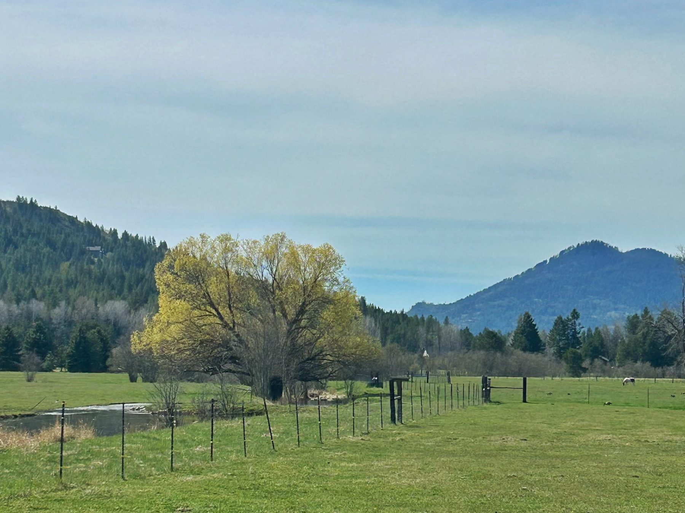
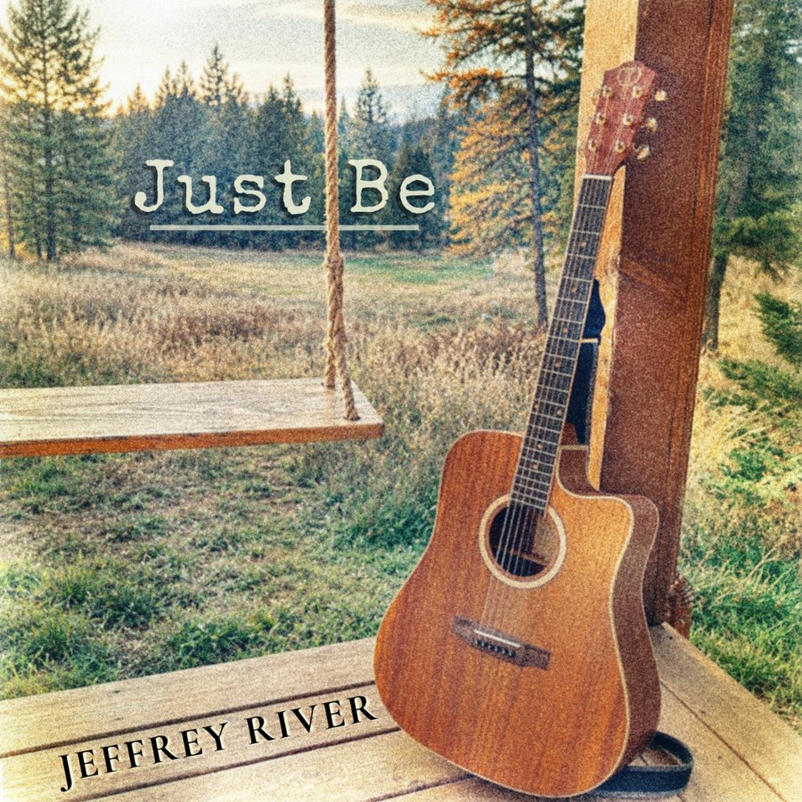

Songs about the little things on our journey...
that matter most.

My first single is almost here. It's a song about slowing down and enjoying the simple things in life.
Follow along so you hear it the day it comes out.
Hey there, I'm Jeffrey, a singer/songwriter from Sandpoint, Idaho. I often find myself getting too busy and wrapped up in the things that don't really matter. So I write songs about slowing down, being in the moment, and not missing the little things, because I need reminded of these truths often! Hopefully they also help you keep your eyes open in a world of constant distraction.
Our family sang together as long as I can remember. My dad taught each of us kids to sing harmony practically from the time we were in diapers. Then one afternoon my grandpa walked into a pawnshop and came home with a small Ovation guitar in need of a home. I instantly adopted it and taught myself to play. At age 13, I wanted to write songs so bad it hurt, but couldn't seem to figure out how, and the small snippets I did eke out were (cough, cough) special.
At 17, I was finally writing songs (that you are never allowed to hear!). I spent my later teen years singing with my family on the road, and the dream kept growing.
In my early twenties, I started writing love songs for my girlfriend (now wife) Lizzie. I got so excited about the songs and producing them that I missed the message and reason behind them. I thought I was ready and had a big music career all mapped out in my mind.
That plan ended the way it needed to. It took walking away from that dream and refocusing on the real priorities - my family and faith. But still, the calling was there, like a destiny lying dormant in the soil of my soul, awaiting the right time to spring to life. (sorry had to sneak in a little poetic license)
I owe so much to my wife Lizzie. She's my greatest fan and teammate in life, and she is the inspiration behind everything I write and sing. She is my producer, manager, and rock! I literally couldn't do this without you!
God's love has been the catalyst that daily helps me say no to my own selfish ambitions and yes to the truly important and eternal things. I'm a work in progress.
By day, I'm a project manager in construction and father of four adorable girls who are the joy and light of my life! But when the kiddos go to sleep, the artist in me wakes up. I'm often up at 2 a.m., scribbling down whatever is rattling around in my brain. Music means something different to me now. It's less about the stage and more about the story. Less about being heard and more about being honest and connecting with others.
There's a place near our house that I walk by almost every day. A willow tree in a meadow, with a river and mountains in the backdrop. It somehow embodies everything I stand for: grounded and rooted in faith, consistency, and belonging, but journeying onward to a destination in the distance.
My first name Jeffrey means peace. My middle name River represents journey, reflection, and connection. That's at the heart of what I write about. I love music and the emotions and response it mysteriously awakens in our souls. And I am thankful to get to share some small part of all of it with you!
My songs are built around fingerpicked acoustic guitar. Some are peaceful and reflective, others you'll be tapping your foot to. I like melodies that draw me into a space of peace and calm, the way I feel sitting on top of a mountain or on a log in the forest, or while drinking coffee on my porch swing.
I'll send out an occasional email when there's a new song, an upcoming show, or something worth sharing.